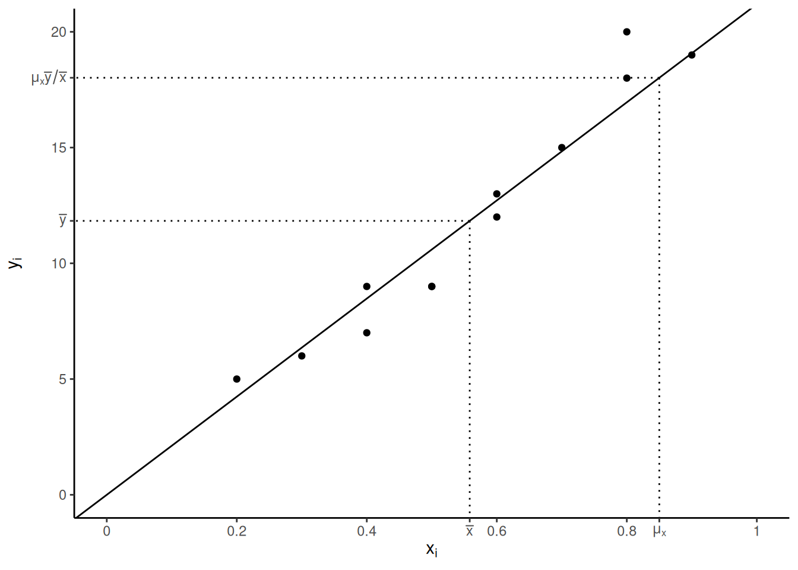
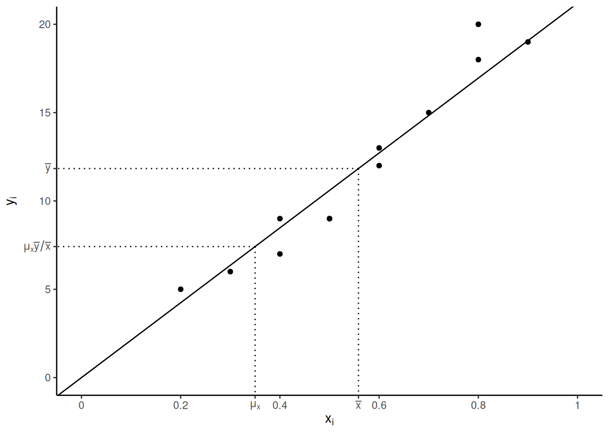
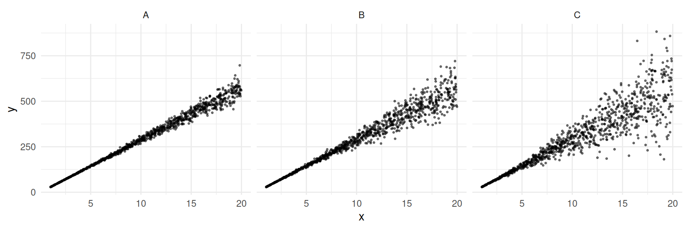
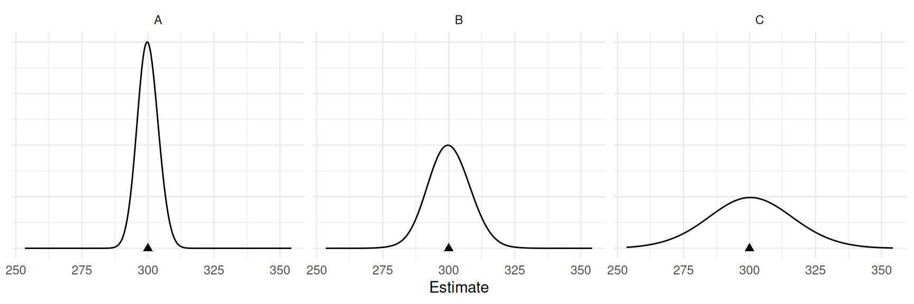

You can also download a PDF copy of this lecture.
We saw that for a simple random sampling design there are two estimators of \(\tau_d\): \[ \hat\tau_d = N_d\bar{y}_d \ \ \ \text{and} \ \ \ \hat\tau_d = \frac{N}{n}n_d\bar{y}_d. \] The first has smaller variance, although it requires knowing \(N_d\). How can we explain the difference in variance using what we know about ratio estimators?
Consider that \[ \bar{y}_d = \frac{\sum_{i \in \mathcal{S}} y_i'}{\sum_{i \in \mathcal{S}} x_i}, \] where \[ y_i' = \begin{cases} y_i, & \text{if the $i$-th element is from the domain,} \\ 0, & \text{otherwise}, \end{cases} \] and \[ x_i = \begin{cases} 1, & \text{if the $i$-th element is from the domain,} \\ 0, & \text{otherwise}. \end{cases} \] Also note that \(N_d = \tau_x = \sum_{i = 1}^N x_i\) and \(n_d = \sum_{i \in \mathcal{S}} x_i\). So we can write these estimators as \[ N_d\bar{y}_d = \tau_x\frac{\sum_{i \in \mathcal{S}} y_i'}{\sum_{i \in \mathcal{S}} x_i} = \tau_x\frac{\frac{1}{n}\sum_{i \in \mathcal{S}} y_i'}{\frac{1}{n}\sum_{i \in \mathcal{S}} x_i} = \tau_x\frac{\bar{y}'}{\bar{x}} \] and \[ \frac{N}{n}n_d\bar{y}_d = \frac{N}{n}n_d\frac{\sum_{i \in \mathcal{S}} y_i'}{\sum_{i \in \mathcal{S}} x_i} = \frac{N}{n}n_d\frac{\sum_{i \in \mathcal{S}} y_i'}{n_d} = \frac{N}{n}\sum_{i \in \mathcal{S}} y_i' = N\bar{y}'. \] And note that \(y_i'\) is “approximately proportional” to \(x_i\) since \(y_i'\) = 0 if \(x_i\) = 0. So now why does the estimator \(N_d\bar{y}_d\) tend to have a smaller variance than the estimator \((N/n)n_d\bar{y}_d\)?
Consider two estimators of \(\mu_y\): \[ \hat\mu_y = \bar{y} \ \ \ \text{and} \ \ \ \hat\mu_y = \frac{\bar{y}}{\bar{x}}\mu_x. \] Writing the ratio estimator as \[ \hat\mu_y = \frac{\mu_x}{\bar{x}}\bar{y} \] shows more clearly that the ratio estimator “adjusts” \(\bar{y}\) by a factor of \(\mu_x/\bar{x}\). \[\begin{align*} \bar{x} < \mu_x & \Rightarrow \frac{\mu_x}{\bar{x}}>1 \Rightarrow \frac{\mu_x}{\bar{x}}\bar{y} > \bar{y} \ \ (\text{i.e., adjust estimate up}) \\ \bar{x} = \mu_x & \Rightarrow \frac{\mu_x}{\bar{x}}=1 \Rightarrow \frac{\mu_x}{\bar{x}}\bar{y} = \bar{y} \ \ (\text{i.e., no adjustment}) \\ \bar{x} > \mu_x & \Rightarrow \frac{\mu_x}{\bar{x}}<1 \Rightarrow \frac{\mu_x}{\bar{x}}\bar{y} < \bar{y} \ \ (\text{i.e., adjust estimate down}) \end{align*}\] The factor of \(\mu_x/\bar{x}\) tells us if \(\mu_x\) is underestimated or overestimated by \(\bar{x}\). This gives us some idea that might have underestimated or overestimated \(\mu_y\) as well, so we might then adjust our estimate.
Example: Here \(\mu_x\) is underestimated by \(\bar{x}\).  Example: Here \(\mu_x\) is overestimated by \(\bar{x}\). 
How does the relationship between the target and auxiliary variable affect the ratio estimator?
Example: In each of the following populations \(N\) = 1000 and \(\mu_y\) = 300.

Consider the sampling distributions of the ratio estimator \(\hat\mu_y = \mu_x\bar{y}/\bar{x}\) with \(n\) = 25.

How does the relationship between the target and auxiliary variable affect the ratio estimator, and how does this compare to using the “non-ratio” estimator? Is a ratio estimator always better than a “non-ratio” estimator? Can a ratio estimator be worse?
Example: Consider a population of \(N\) = 3000 elements (prisoners) where the target variable is finger length, and three estimators of \(\mu_y\):
| estimator | variance | B |
|---|---|---|
| Ratio Using Height | 0.00174 | 0.08 |
| Mean | 0.00292 | 0.11 |
| Ratio Using Age | 0.07795 | 0.56 |
What are some sources of auxiliary variables?